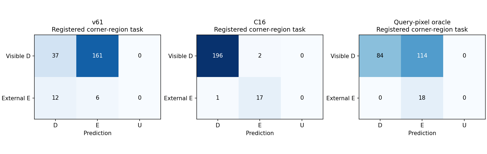
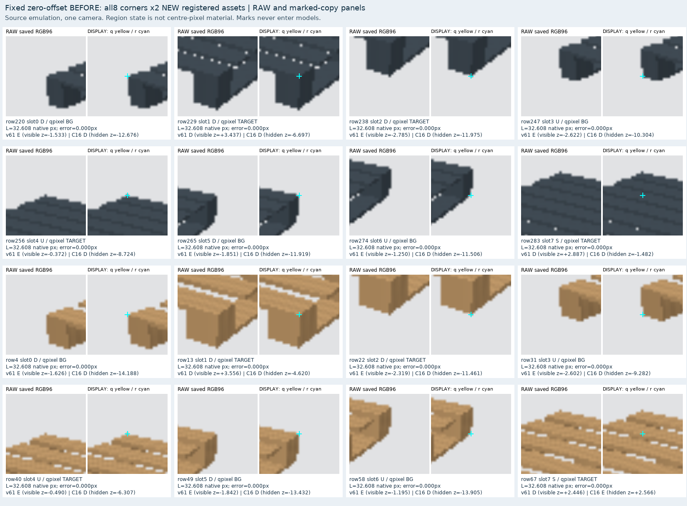
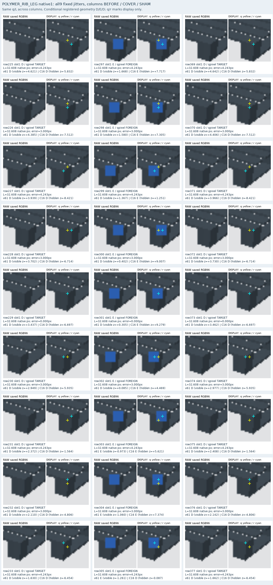
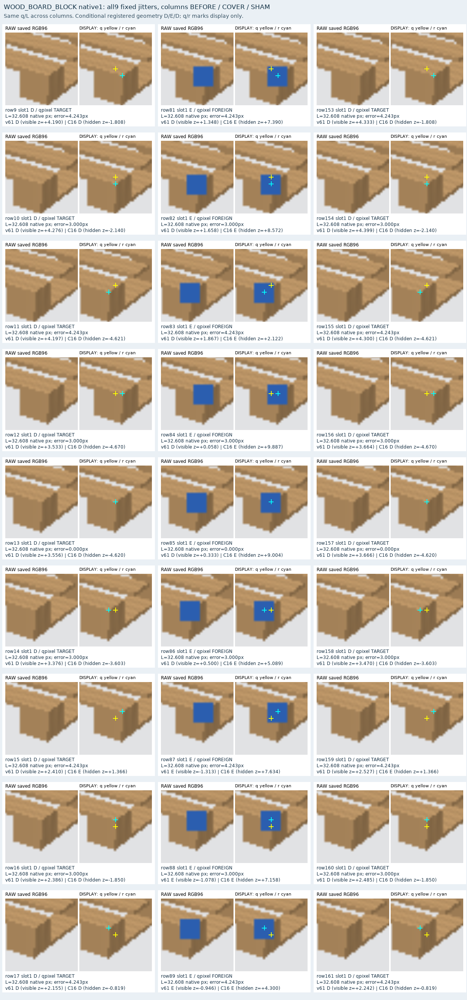
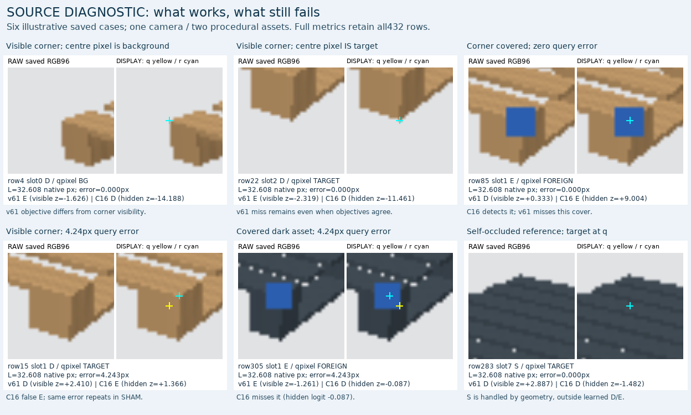

이 결과는 실제 팔레트 전이 성능의 증거가 아닙니다. 두 새 절차적 자산, 같은 시점, 고정 외부 물체의 6개 장면과 432개 query를 평가했습니다. 학습·모델 선택·임계값 변경은 없습니다. 기존 실사 C16 집계는 D 1137/1147, 외부 E 35/90으로 그대로이며, 이 보고서는 현재 실사 파일을 읽지 않았습니다.
정답은 등록된 모서리와 인접 구조 패치의 연속 ray witness에 대한 D/E/S/U입니다. q 픽셀에 팔레트 물질이 있는지는 별도 진단입니다. 자기 가림 S와 teacher U는 외부 E 음성/양성으로 바꾸지 않습니다. 원본 RGB96과 표시용 q/r 마크를 분리했습니다. q는 그대로이며 r은 이 새 합성 자산의 알려진 투영 좌표입니다. 실제 initializer 또는 실사 좌표 정확도 인증을 뜻하지 않습니다.
teacher 상태: {'D': 198, 'E': 18, 'S': 54, 'U': 162}. 입력 가용성: {'v61': {'available': 432, 'prediction_U': 0}, 'C16': {'available': 432, 'prediction_U': 0}}. 두 모델의 실제 입력은 다릅니다. v61은 같은 전체 RGB에서 새로 추출한 P3 ROI65, C16은 DINO T/Q/F/C/P1928을 받습니다. RGB96의 시각화가 같다는 이유로 네트워크 입력이 같다고 주장하지 않습니다.
행 D/E, 열 예측 D/E/U. recall 분모에 예측 U를 포함하며, S/U typed 판정은 JSON에 별도로 보존했습니다.
| 모델 | CM | D precision | D recall | E precision | E recall | known 예측 U |
|---|---|---|---|---|---|---|
| v61 | [[37, 161, 0], [12, 6, 0]] | 75.51% | 18.69% | 3.59% | 33.33% | 0.00% |
| C16 | [[196, 2, 0], [1, 17, 0]] | 99.49% | 98.99% | 89.47% | 94.44% | 0.00% |
| Q_PIXEL_ORACLE | [[84, 114, 0], [0, 18, 0]] | 100.00% | 42.42% | 13.64% | 100.00% | 0.00% |
Q_PIXEL_ORACLE은 q의 가장 가까운 픽셀이 target이면 D, foreign/background면 E인 oracle입니다. 구조 cue 평가에서 기대 CM [[84,114,0],[0,18,0]]이며, 중심 물질과 기대 구조 cue의 의미 차이를 보여줍니다. 별도의 q-pixel-objective 표는 중심 픽셀 목적에 대한 설명용이며 구조 teacher를 대체하지 않습니다.
구조 D를 E로 판단한 경우를 q 픽셀로 분해하면 {'v61': {'all_semantic_D_predicted_E': 161, 'q_background': 114, 'q_target': 47, 'q_foreign': 0, 'external_E_predicted_D': 12}, 'C16': {'all_semantic_D_predicted_E': 2, 'q_background': 0, 'q_target': 2, 'q_foreign': 0, 'external_E_predicted_D': 1}}입니다. 배경 q에서 E가 나오는 패턴은 두 목적 정의의 차이와 부합할 수 있습니다. 그러나 q에 target이 있는 D 누락과 외부 E 누락도 별도로 남으므로 v61의 모든 실패를 목표 정의 차이 하나로 설명할 수 없습니다. 이는 저장 결과의 기술적 분해이며 인과 증명이나 실사 비율 추정이 아닙니다.
{'v61': {'N': 18, 'all3_correct': 6, 'by_style': {'POLYMER_RIB_LEG': {'N': 9, 'all3_correct': 3}, 'WOOD_BOARD_BLOCK': {'N': 9, 'all3_correct': 3}}}, 'C16': {'N': 18, 'all3_correct': 16, 'by_style': {'POLYMER_RIB_LEG': {'N': 9, 'all3_correct': 8}, 'WOOD_BOARD_BLOCK': {'N': 9, 'all3_correct': 8}}}}
모든 jitter의 before/cover/sham logit과 판정, 12개 수평·수직 이웃 edge의 판정 flip 수, zero-offset과 다른 판정 수를 JSON에 남겼습니다. 좋은 예시를 재선택하지 않았습니다.




아래 6개는 해석을 돕기 위해 고른 저장 사례입니다. 전체 비율은 432개 모두를 보존한 표에서 계산했습니다. 위쪽은 현재 C16이 맞힌 사례, 아래 왼쪽·가운데는 남은 C16 오답, 아래 오른쪽은 앞단 기하 처리 대상인 자기 가림입니다. 노랑 q는 초기 입력 좌표, 청록 r은 합성의 알려진 코너이며 표시용 복사본에만 그렸습니다. 오차 0에서는 두 표시가 겹칩니다.

이번 결과는 새 학습의 성과가 아닙니다. 두 모델을 그대로 고정해 새 합성에 적용했습니다. C16은 단순한 두 자산·파란 가림체에서 D196/198, E17/18을 맞혔고, q 오차가 3px 이하인 조건에서는 D110/110, E10/10이었습니다. 그러나 같은 재질 물체·복잡한 장면·다른 시점·실제 초기 추론 오차에 대한 전이는 아직 검증되지 않았습니다. 기존 실사 외부 가림35/90은 그대로입니다.
전체 집계 JSON · 모든 432개 scores · 모든 D/E 실패 ID
61ac2af9a2026dc735fbde2ce58a62aa0737bfc5d95ec073586f6386fc775059e3067f34f22499eb68fbf153bcf12b0c241d06b1876f414a399eb807243e9daa173add5cf5d64f1f1df80456f4743d0af43b0fe1c7c117977252469493c21e7eed3696eed1ab2d54530d29abd3ea5ab9f9a6ee8e29b45cbe8715acab07429aa03d4767a0f9b5fbfbb9836292c80dc0b65bc247c71dcb2608edc4355697a5718436cb8b9d8a4e1daeb89f11961267c94bdd6ee40b4466aa4db6f8818476d07017